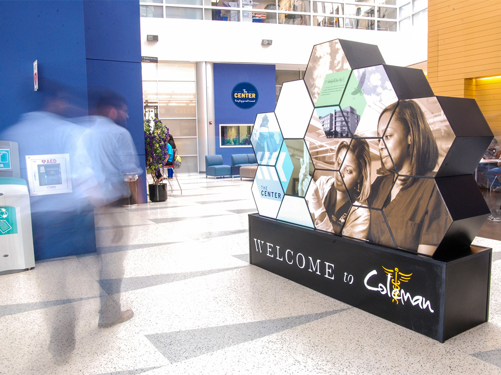
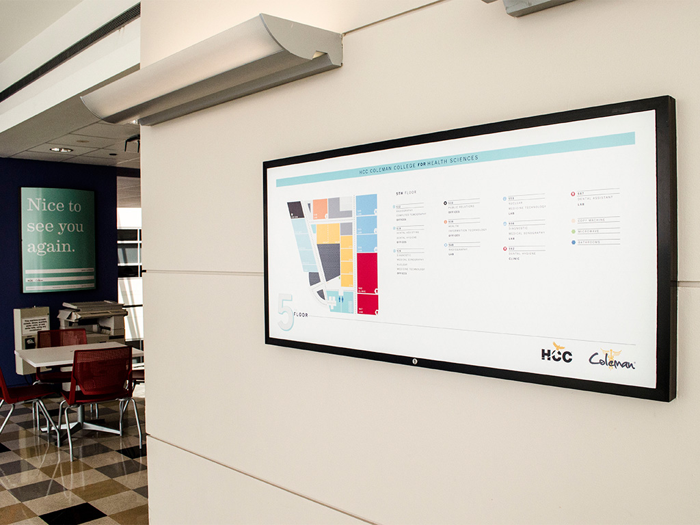
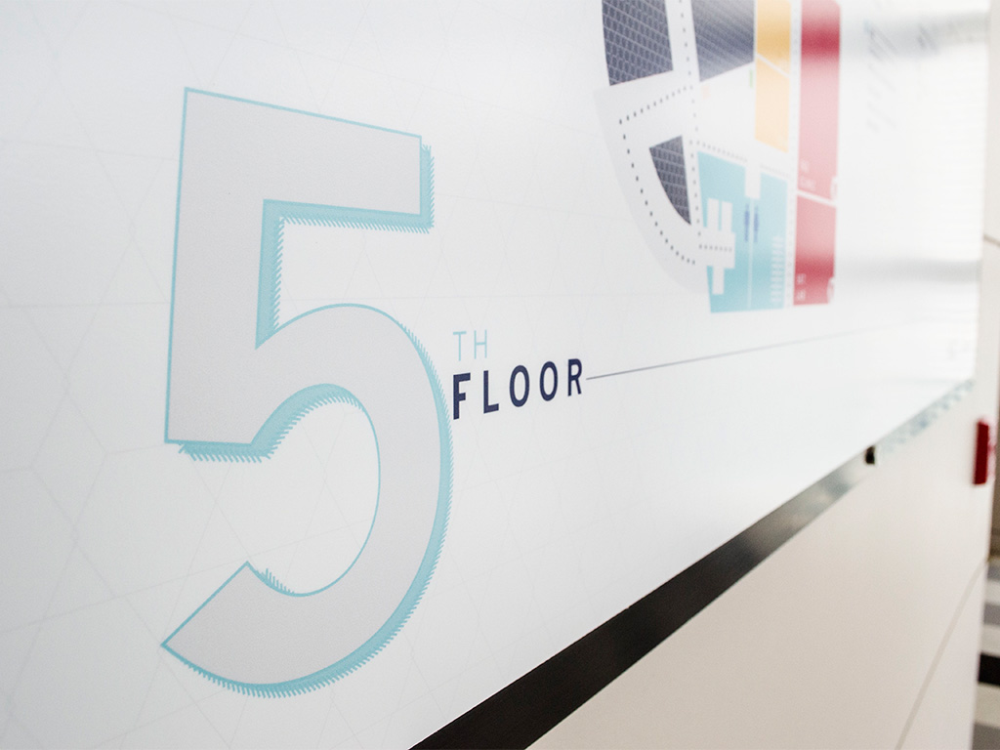
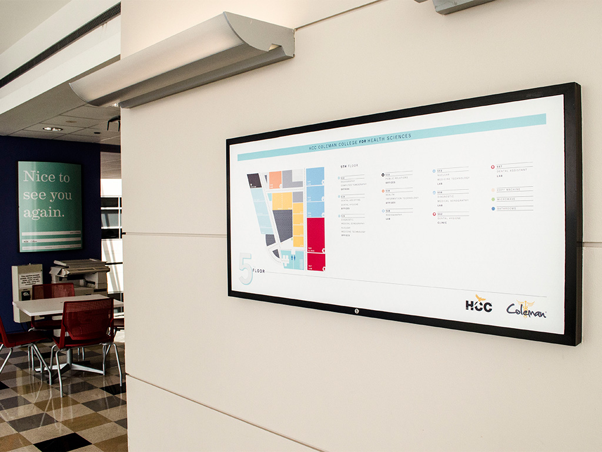
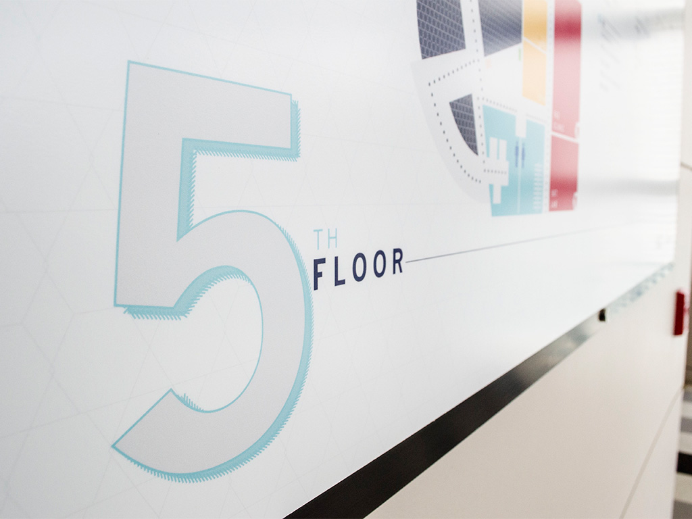

HCC Coleman College Environmental Design
The demolition of the Welcome Center at HCC Coleman College for Health Sciences created much more seating space for students on the first floor but also removed friendly faces for visitors to interact with as they first entered the building. The college campus needed a simple way to interact with its students (both current and potential) and also inform them of the school’s history and alumni.
The HCC Coleman Public Relations Department created a monument comprised of 13 hexagon blocks, which contain campus directory information, information on the college’s namesake and distinguished alumni. Each of the panels is easily customizable, which will allow the display to be updated with new information whenever necessary.
The PR Department also updated the floor directories, replacing the old and out-of-date directories that had confused campus visitors for years. The new directories utilized color to easily distinguish classrooms from offices and laboratories.
I worked with our graphic design to develop the concept of the display monument through several iterations. Once the physical structure was decided, we again collaborated to ensure that the design was easy to understand and visually pleasing. I worked with our College Operations Office to ensure the accuracy of the information on the display and directories. I worked with our printer to ensure the accurate, on-budget construction of the monument.
The HCC Coleman Public Relations Department was awarded a 2013 Bronze Paragon award in display signage from the National Council for Marketing and Public Relations (NCMPR). The department also earned a 2013 NCMPR Gold Medallion Award.
 


